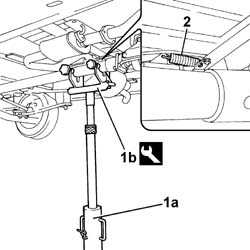
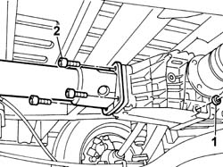
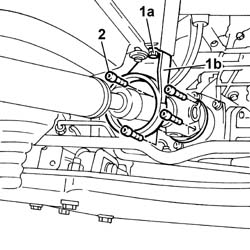
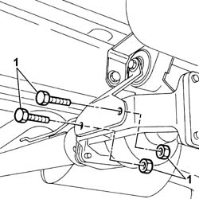
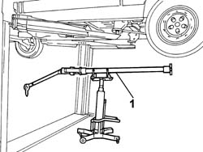

2410A18 TRANSMISSION WITH JOINTS INCLUDED - R.R.
- Path
- Procedures > 24 TRANSMISSION > 2410 TRANSMISSION SHAFT > 2410A TRANSMISSION SHAFT BETWEEN THE TRANSMISSION AND THE DIFFERENTIAL > 2410A18 TRANSMISSION WITH JOINTS INCLUDED - R.R.
- Kind
- repair procedure (removal / refitting; the operation number is the code)
- Applies to
- engines: 2.0 16V, 2.8 JTD 8V; all production periods; only with equipment: 4X4
- Interactive page
- https://sloeber94.github.io/elrnDB-fDct/en/#/244001049
Applies to: engines: 2.0 16V, 2.8 JTD 8V; all production periods; only with equipment: 4X4
 Removing
Removing
 Refitting
Refitting- Position the vehicle on the lift.
1. Position a hydraulic lift (1a) with tool (1b) to support the entire transmission unit.
Description | Code | Function | |
|---|---|---|---|
1b | Support | 1.870.602.001 | Transmission stand |
2. Release the spring of the handbrake link from the rear propeller shaft sleeve.

Applies to: engines: 2.0 16V, 2.8 JTD 8V; all production periods; only with equipment: 4X4
- Position a suitable container for collecting the rear differential fluid.
1. Undo the differential plug and drain the transmission fluid
2. Undo the bolts securing the rear transmission shaft to the rear differential.

Applies to: engines: 2.0 16V, 2.8 JTD 8V; all production periods; only with equipment: 4X4
- Loosen the greaser for the universal joint securing the front propeller shaft to the rear drive idler unit.
1. Undo the fixing bolts (1a) and move the safety bracket (1b) aside.
2. Loosen the bolts fixing the front propeller shaft universal joint to the rear drive idler unit.

Applies to: engines: 2.0 16V, 2.8 JTD 8V; all production periods; only with equipment: 4X4
1. Undo the bolt fixing the viscous coupling to the mounting bracket.

Applies to: engines: 2.0 16V, 2.8 JTD 8V; all production periods; only with equipment: 4X4
1. Release the transmission assembly from the front idler unit and rear differential and remove.
- Remove the hydraulic lift and the support tool.
Description | Code | Function | |
|---|---|---|---|
- | Support | 1.870.602.001 | Transmission stand |

Applies to: engines: 2.0 16V, 2.8 JTD 8V; all production periods; only with equipment: 4X4
Refitting
Removing- Using a hydraulic lift with a stand, fit the transmission assembly in its housing.
Description | Code | Function | |
|---|---|---|---|
- | Support | 1.870.602.001 | Transmission stand |
- Tighten the bolts securing the rear transmission shaft sleeve to the rear differential.
- Tighten the bolts fixing the viscous coupling to the mounting bracket.
- Tighten the bolts fixing the safety bracket.
- Tighten the bolts fixing the front propeller shaft universal joint to the rear drive idler unit.
- Tighten the grease fitting for the universal joint securing the front propeller shaft to the rear drive idler unit.
- Secure the spring of the handbrake link to the rear propeller shaft sleeve.
- Top up the rear differential fluid level.
- Remove the hydraulic lift and the support tool.
Description | Code | Function | |
|---|---|---|---|
- | Support | 1.870.602.001 | Transmission stand |
- Remove the vehicle from the lift.